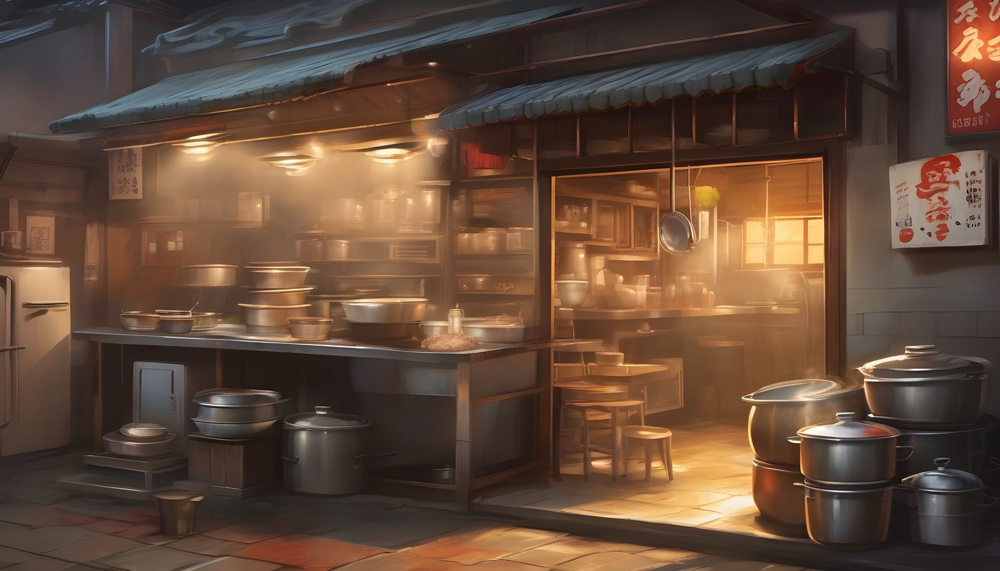

食券はこちら
入ってすぐ左の券売機で。替え玉は席で店員に声をかけてください。
- ラーメン730円
- 味玉ラーメン初めての方に850円
- ねぎラーメン830円
- チャーシュー麺1,030円
- 替え玉席で口頭でも150円
- 半替え玉100円
- 味付け玉子120円
- 焼き餃子 7個380円
- ご飯160円
- 明太子ご飯330円
- 瓶ビール夜のみ650円
- 烏龍茶220円
表示はすべて税込。券売機は現金と交通系ICが使えます。紅しょうが、辛子高菜、すりごまは卓上に。

寸胴は、
火を止めない。
屋台で12年炊いてきたスープを、そのまま店に持ってきました。骨は朝と夕方の2回足して、継ぎ足しで18時間。白く濁るまで強火で炊くので、匂いはしっかり、後口は軽めです。
麺は細さ0.9ミリの低加水。15秒で上がる硬さが基本です。
店主 宇佐川 健
並ばずに食べたい日は
曜日を選ぶと、時間ごとの混み具合の目安が出ます。
並ぶことが多い座れることが多いあくまで目安です。雨の日や連休は変わります
- 月曜 空いている目安は14時台と18時台
- 火曜 空いている目安は14時台と18時台
- 水曜 定休日
- 木曜 空いている目安は18時台
- 金曜 空いている目安は14時台と18時台
- 土曜 空いている目安は18時台
- 日曜 空いている目安は0時台
麺の硬さの頼み方
食券を渡すときに一言どうぞ。何も言わなければ「普通」で出します。
- 粉おとし湯にくぐらせるだけ。粉っぽさが残る芯の強さ常連向け
- ハリガネ数秒で上げる。ぱきっと折れる歯ざわり
- バリカタしっかり硬め。替え玉はこれが一番人気替え玉におすすめ
- カタ少し硬め。スープを吸っても伸びにくい初めてならここから
- 普通店の基本の茹で加減
- やわ柔らかめ。お子さんやゆっくり食べたい方に


お客様の声
仕事終わりの0時過ぎでも替え玉まで頼めるのが助かる。
M.K(30代)
匂いはしっかり豚骨なのに、飲み干しても重くない。
S.O(50代)
お店の場所と営業時間
- 店名
- 豚骨ラーメン 麦生(むぎお)
- 住所
- 福岡市 麦生通2丁目0-0
- 電話
- 092-000-0000
- 昼
- 11:00〜15:00(最終注文 14:45)
- 夜
- 18:00〜翌1:00(最終注文 0:45)
- 定休日
- 水曜
- 席
- カウンター9席
- 駐車場
- なし(近くにコインパーキングがあります)